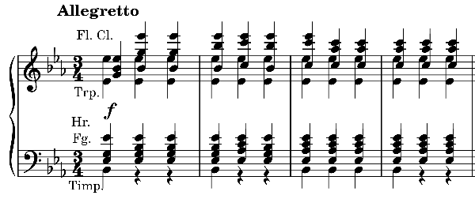

モーツァルト: 交響曲第39番（フンメル編）
モーツァルトの『交響曲第39番』の第3楽章といえば元気のよいメヌエット。だが近頃はあまりに元気はつらつだけの演奏は聴くのがつらくなった。この楽章に特にこだわるわけではないのだが、第3楽章で聴くのを止めたくなるのは問題だ。そこで聴き放題のストリーミングサービスを使って手当たり次第に好みの演奏を探してみることにした。
この単純な音楽である第3楽章に求めるのは、一言でいえばメヌエットらしい演奏というだけのことなのだが、どれも完全には満たしてくれない。中でアバド指揮モーツァルト管弦楽団のライブが好みに近いように思った。
なぜ多くの演奏がメヌエットよりも行進曲（3拍子ではあるが）のように響いてしまうのか、聴いているだけではよくわからなかったので、MuseScoreの練習を兼ねて冒頭部分の弦楽器以外のパートを楽譜にしてみた。

管全員がフォルテでベタっと四分音符和音を吹き続け、そこにティンパニでアクセントをつける形となっている。弦の伴奏音型にはスタッカート指示があるが、こちらは何もない。譜面に忠実に演奏すると、連続したフォルテの刻みが常に目立ち続けることになり、それが舞曲らしさを減ずることになっている気がする。実際そういう演奏が多い。作曲者自身がメヌエットの類型から抜け出すことを意図していた可能性はあるものの、少なくとも40番・41番のメヌエットを聴く限りそうは思えない。ティンパニがアクセントになるので、他は指示されたフォルテを維持しても強弱弱のパターンになることはなるのだが、2、3拍目は個人的な好みとしては音量をぐっと落としてほしい。そしてテンポの方も等間隔の刻みではなく旋律主導でセンス良く揺らしてほしい。
小人数の演奏であれば聞きやすいのではないかと、室内楽編曲を探してみたりした。（Spotifyはこういう検索が苦手。おびただしいノイズを含むリストの中ひたすらタイトルを見ていくしかない。）IMSLPで編曲を探したが室内楽編曲はないようだ。だが根気よく探した甲斐あって、フンメルがピアノ・フルート・ヴァイオリン・チェロの4重奏に編曲した演奏が見つかった。これは珍しいものが引っ掛かった。
Wolfgang A. Mozart: Symphony No.39
in E-Flat Major, K. 543
(arr. J.N. Hummel for
flute, violin, cello and piano)
Friedemann Eichhorn (vn)
Martin Rummel (vc)
Roland Krüger (pf)
Uwe Grodd (fl)
(2012)
第38,39,40番が入っている。フンメルは名前は知っているが作品を聞いたことはあったかなという程度の古典派の作曲家。モーツァルトの弟子でベートーヴェンより少し下の世代であり、当時はイ短調協奏曲がもてはやされたということだ。従って当然ピアノが主役でその華やかさが気持ち良い。フルートと弦が絶妙な音色で絡まってくるので小編成ゆえの不満はほぼ感じない。上で書いた伴奏音型はあまり気を使って弾かれているようには思わないが、やかましさは感じずにすむ範囲である。思いがけない発見である。セレンディピティというやつか。
追記：
同じ演奏家でフンメル編交響曲第35, 36, 41番のアルバムも出ている。フンメルは他にもベートーヴェンの交響曲を第7番まで編曲しているらしい。また、第39番以外はIMSLPにも置いてあった。
(Oct. 12, 2022; Rev. Aug. 1, 2024)